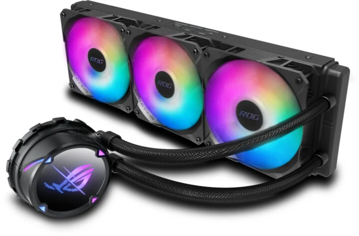

-
Aktivní vs. pasivní chlazení
Existují dva hlavní typy chlazení grafických karet. Aktivní chlazení využívá ventilátorů, které odvádějí teplo pryč z karty. Pasivní chlazení se spoléhá na hromadění tepelné energie a její přenos mimo kartu bez použití ventilátorů. -
Chladicí bloky
Chladicí bloky jsou často používány u pokročilých grafických karet, zejména u modelů navržených pro přetaktování (overclocking). Tyto bloky se obvykle skládají z měděné nebo hliníkové základny s trubkami nebo lamelami, které odvádějí teplo pryč od grafického procesoru. -
Ventilátory
Většina moderních grafických karet je vybavena jedním nebo více ventilátory. Tyto ventilátory jsou navrženy tak, aby dodávaly chladný vzduch do chladicího bloku a odváděly horký vzduch pryč z karty. Některé grafické karty mají také pokročilé systémy řízení ventilátorů, které optimalizují otáčky ventilátorů v závislosti na teplotě karty. -
Tepelné pasty
Tepelná pasta se často používá k vylepšení přenosu tepla mezi grafickým procesorem a chladicím blokem. Tepelná pasta pomáhá eliminovat vzduchové mezery mezi povrchem procesoru a chladicím blokem, což zlepšuje efektivitu chlazení. -
Vodní chlazení
Některé nadšenecké grafické karty nabízejí možnost vodního chlazení. Toto chlazení využívá uzavřený okruh s chladicím blokem, který je napojen na čerpadlo a radiátor s ventilátory. Vodní chlazení může poskytnout vyšší výkon a nižší teploty než tradiční chlazení vzduchem, ale vyžaduje speciální instalaci a údržbu.

Vodní chlazení